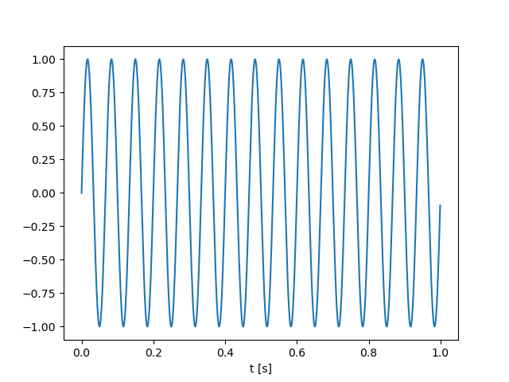

Functions¶
Introduction¶
Functions allow you to organize your code by splitting your program into subprograms. A function is a block of code that only performs one particular task. Instead of using the same block of code to perform a repetitive task, the code is specified in a function once and for all. This approach has two benefits: it avoid you to repeat your code, and it increases your code reliability.
In the previous chapter, we have already used functions, without knowing it, such as print, input and randint. In this chapter, we will learn how to create our own functions and organize them into modules.
Usage¶
To create and use a function, we need 3 steps:
Identification of the function prototype,
Definition of the function,
Function calling.
Prototype¶
A function is described by its name and can take some input arguments (or parameters) and return some outputs.
These parameters specify the function prototype.
- name:
An explicit name that indicates the objective of your function.
- inputs:
A list of input parameters that is passed to the function.
- outputs:
A list of output that must be returned outside the function
Input arguments can be divided into two classes:
Positional arguments: a positional argument needs to be explicitly passed to the function using the order specified in the prototype,
Optional arguments: an optional argument can be passed to the function, but it is not mandatory. For optional arguments, a default value must be explicitly provided in the prototype.
Definition¶
The function definition can be decomposed into 3 parts.
First line: the
defkeyword should be followed by the function name and the input arguments. The input arguments should be specified under parenthesis and separated by commas.Body of function: the body of the function contains the function’s code. To belong to a function, the function’s body must be indented.
Last line: the function outputs must be specified by the
returnkeyword.
The following code presents the general syntax for a function definition.
def my_function(argument1, argument2, argument3):
# body of function
# assign variable1 and variable2
return variable1, variable2
Warning
The function definition only defines the code of the function. In particular, it does not imply that the function will be invoked (or called) by your program. To run the function, the function must be explicitly called in your main program (see next section)
Function Call¶
A function call has the following syntax.
output1, output2 = my_function(val1, val2, val3)
It is important to mention that for positional arguments, the argument names do not require to be the same as in the definition. For positional arguments, the arguments are dispatched to the function with respect to their ordre. For the considered example, arguments1 refers to val1, arguments2 refers to val2, and arguments3 refers to val3.
Code Organisation¶
For short programs, it is commun to have the function definition and the function call in the same python file. The next example illustrates this situation.
def my_function(argument1, argument2, argument3):
# code of the function
# assign variable1 and variable2
return variable1, variable2
# Beginning of the main program
# assign val1, val2, val3
output1, output2 = my_function(val1, val2, val3)
print(output1)
Examples¶
hello_user¶
The following lines of code show how to create a function
named hello_user that prints the particular message "Hello {username}" where the content of username is provided as function input.
The function prototype is provided below.
- name:
hello_user
- inputs:
username (str)
- outputs:
None
The definition of the function is quite simple since the body of the function is simply composed of a single print.
def hello_user(username):
print("Hello {}".format(username))
This function can be called as follows.
hello_user("toto")
Warning
In the considered example, the function does not return any variable.
The complete code (definition + call) can be
# function definitions
def hello_user(username):
print("Hello {}".format(username))
# main program
hello_user("toto")
maximum¶
In this example, we develop a program that computes the maximum of a list of numbers. Note that Python already have a function to find the maximum of a list (https://docs.python.org/3/library/functions.html#max). Our objective here is to reproduce the behavior of this function.
Prototype
- name:
maximum
- inputs:
number_list (a list of float)
- outputs:
a number (float)
The function definition uses a for loop to iterate over all the number of the list
def maximum(number_list):
max_temp = number_list[0]
for index in range(1, len(number_list)):
number_temp = number_list[index]
if number_temp > max_temp:
max_temp = number_temp
return max_temp
To test our function, the following program calls the maximum function to find the maximum of the list 19, 21, 5, 11.
# function definition
def maximum(number_list):
max_temp = number_list[0]
for index in range(1, len(number_list)):
number_temp = number_list[index]
if number_temp > max_temp:
max_temp = number_temp
return max_temp
# main program
my_list = [19, 21, 5, 11]
maxi = maximum(my_list)
print(maxi)
sinewave¶
The following lines of code show how to create a function named sinewave that computes the value of a sinewave. The mathematical expression of a sinewave is given by
The function prototype is provided below.
- name:
sinewave
- inputs:
t (float)
f (float)
a (float)
[optional] phi=0 (float)
- outputs:
s (float)
The last input argument corresponds to an optional argument. Optional arguments must be placed after the positional arguments.
If 4 arguments are provided to the function, the 4th argument will be assigned to the variable
phi.If only 3 arguments are provided, the value of
phiwill be initialized to 0 (default value).
Regarding the function definition, we need to import the function sin and the variable pi from the math module to evaluate the mathematical expression.
from math import sin, pi
def sinewave(t, f, a, phi=0):
phase = 2*pi*f*t + phi
s = a * sin(phase)
return s
The following program shows how to compute the first N=10 samples of a sinewave with particular frequency, amplitude and phase using several function call to sinewave.
# function definition
def sinewave(t, f, a, phi=0):
phase = 2*pi*f*t + phi
s = a * sin(phase)
return s
# main program
Fe = 1000
f = 15
a = 2
s_vect = []
for n in range(100):
t = n/Fe
s = sinewave(t, f, a) # call the sinewave function
s_vect.append(s)
print(s_vect)
Modules¶
For complex programs, it is commun to use a long list of functions. To make the code clearer, these functions can be organized in a collection of files called module.
Standard Modules¶
Python comes with a library of standard modules. The list of modules is available here.
For example, the following line shows how to import the randint function from the random module of standard library.
from random import randint
x = randint(0, 10)
print(x)
Note that this code does not contain the definition of the randint function. This function is defined in the random module (see source code is here).
Three different syntaxes can be used to import a function of a particular module.
Specific Import¶
from random import randint
x = randint(0, 10)
Import with namespace¶
import random as rnd
x = rnd.randint(0, 10)
Full Import¶
from random import *
x = randint(0, 10)
This last syntax imports all names of the module except those beginning with an underscore (_). In most cases Python programmers do not use this facility since it introduces an unknown set of names into the interpreter, possibly hiding some things you have already defined.
To use a module, it is really important to READ THE OFFICIAL DOCUMENTATION. The official documentation describes the function prototype and usually gives some commented examples.
Note
Many students prefers to specify a request on Google to know how to use a function. It is a bad practice. Indeed, the google search engine usually redirects to a Stackoverflow page, where the best stackoverflow answer usually redirects to the official documentation with the aggressive comment: “Read The Doc !”.
Non Standard Modules¶
In addition to standard modules, your python distribution can also include non-standard modules and packages using the PIP (https://pypi.org). Python is one of the most popular programming language due to the incredible number of powerful modules and packages available on PIP. You can install numpy, scipy, pandas and matplotlib. If you want to experiment on web development, I recommend you to install flask or django. Finally, if you want to experiment with Machine Learning or Deep Learning algorithms, just install the scikit-learn or pytorch frameworks.
Package installer for Python¶
PIP is the Package installer for Python. To obtain the list of available modules and packages installed in your computer, open your terminal and run the command
$ pip list
This command displays the list of installed packages with their version.
For example, a scientific python distribution (such as the Anaconda distribution) usually contains the wonderful packages numpy, scipy and matplotlib.
New modules and packages can be simply installed from internet using the following commands.
$ pip install {modulename}
where {modulename} is replaced by the name of the module to be installed.
Example¶
The following example illustrates the use of non-standard modules and packages. This example presents a simple program that computes and displays a sinewave using the scientific modules numpy and matplotlib.
Numpy provides a multidimensional array object, various derived objects (such as masked arrays and matrices), and an assortment of routines for fast operations on arrays, including mathematical, logical, shape manipulation, sorting, selecting, I/O, discrete Fourier transforms, basic linear algebra, basic statistical operations, random simulation and much more (see offical documentation: https://numpy.org/doc/stable/)
Matplotlib provides a list of function and objects for the creation of static, animated, and interactive visualizations in Python (see official documentation: https://matplotlib.org)
import numpy as np
import matplotlib.pyplot as plt
Fe = 1000
f = 15
a = 2
t = np.arange(0, 1, 1/Fe) # create a numpy array
s = np.sin(2*np.pi*f*t) # compute a numpy array
plt.plot(t, s) # plot a function
plt.xlabel("t [s]") # change the xlabel
plt.show()
This script should display the following figure.
{kind=link}
Note
As discussed before, if you want to know exactly how to use a function, you need to look at the official documentation.
[Numpy] arange : https://numpy.org/doc/stable/reference/generated/numpy.arange.html
[Numpy] sin : https://numpy.org/doc/stable/reference/generated/numpy.sin.html
[Matplotlib] plot : https://matplotlib.org/stable/api/_as_gen/matplotlib.pyplot.plot.html
[Matplotlib] xlabel: https://matplotlib.org/stable/api/_as_gen/matplotlib.pyplot.xlabel.html
[Matploltib] show: https://matplotlib.org/stable/api/_as_gen/matplotlib.pyplot.show.html